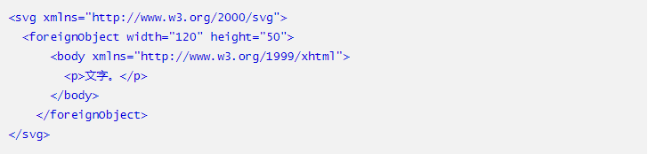

foreignObject 元素的作用是可以在其中使用具有其它XML命名空间的XML元素，换句话说我们可以直接在SVG内部嵌入XHTML元素，举个简单的例子：

可以看到 foreignObject 标签里面有一个设置了xmlns="http://www.w3.org/1999/xhtml"命名空间的 body 标签，此时 body标签及其子标签都会按照XHTML标准渲染，实现了SVG和XHTML的混合使用。
进入demo